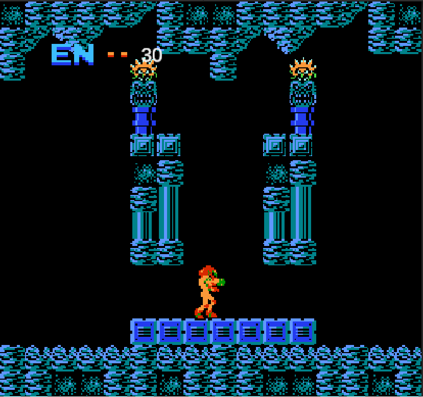

Metroid (NES) Remake
Metroid is a classic 2D platformer. Despite being released originally released several decades ago, the game features a variety of game mechanics that still persist in video games to this day.
A large focus of my work on this project was on the various enemies. Each type of enemy has their own unique way of interacting with the player and game environment, in terms of movement paths, player tracking, and state handling. Additionally, I also worked on camera and room transitions, player health and damage, map layout, and player controls.